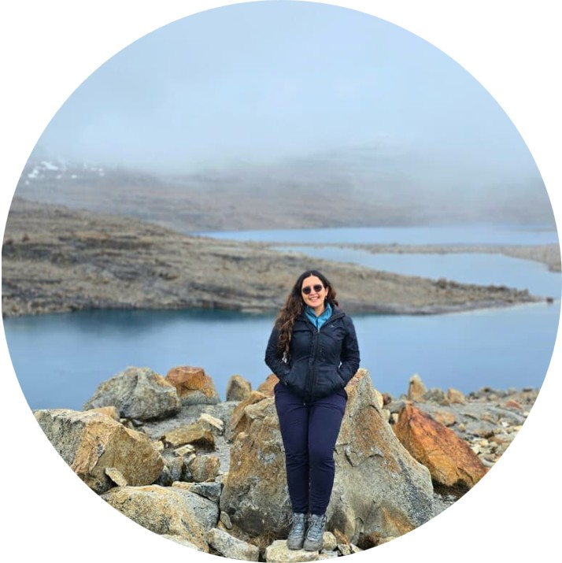

Ingeniera Ambiental · Magíster en Inteligencia Artificial
Investigadora en el CESED, Facultad de Economía de la Universidad de los Andes. Uso GeoIA y datos satelitales para entender la deforestación y las economías ilícitas en la Amazonía colombiana.
Regiones generales de trabajo, no ubicaciones exactas de campo.
Un mismo territorio amazónico, leído en distintas capas.
Segmentación de bosque y extracción de métricas espaciales con datos abiertos.
2 ponenciasTransiciones entre coca, minería de oro y ganadería en el posacuerdo amazónico.
6 publicacionesRehabilitación y revegetalización en los Cerros Orientales de Bogotá.
2 ponenciasJusticia ambiental y planeación de transporte sostenible en la región amazónica.
2 publicacionesSoy ingeniera ambiental, Magíster en Inteligencia Artificial e investigadora en el CESED (Centro de Estudios sobre Seguridad y Drogas) de la Facultad de Economía de la Universidad de los Andes. Mi trabajo combina GeoIA, datos satelitales y análisis espacial para entender cómo las economías ilícitas —coca, minería de oro, ganadería— transforman el paisaje y la cobertura de bosque en la Amazonía colombiana.
He trabajado con organizaciones como FCDS en el monitoreo de la deforestación, y colaborado en investigaciones publicadas en PNAS y el Journal of Peasant Studies sobre justicia ambiental y los mecanismos detrás de la deforestación impulsada por economías campesinas e ilícitas.
Mi formación técnica en restauración ecológica y evaluación de impacto ambiental es la base sobre la que construyo este trabajo: combino el rigor de la ciencia de datos geoespaciales con una comprensión de campo del territorio y sus comunidades.

V Congreso Colombiano & VI Congreso Iberoamericano y del Caribe de Restauración Ecológica
Amerigeo Week
Encuentro Internacional de Educación en Ingeniería ACOFI
Formación, experiencia profesional y publicaciones detalladas en un solo documento.
¡Escríbeme para que investiguemos juntos!
Universidad de los Andes
Facultad de Economía — CESED
Centro de Estudios sobre Seguridad y Drogas